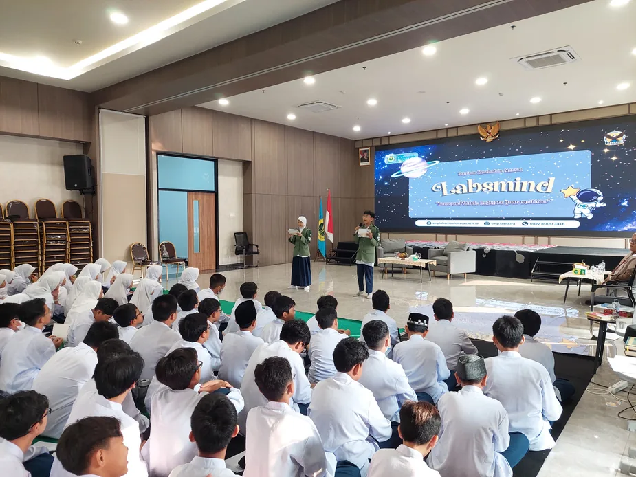
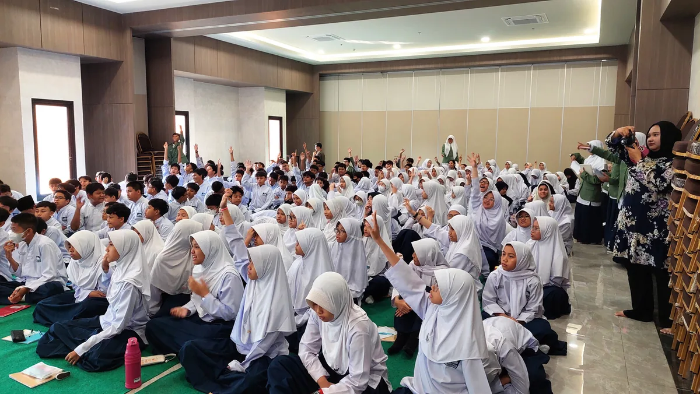
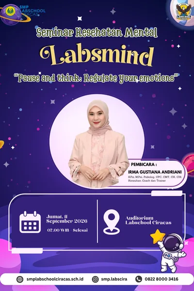
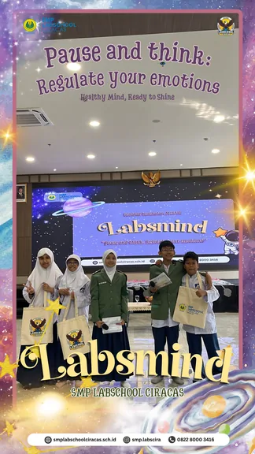

Labsmind: Ceramah Umum Regulasi Emosi
Tema: "Pause and think: Regulate your emotions"

Latar belakang
Masa remaja ditandai gejolak emosi yang dinamis: suasana hati cepat berubah, mudah marah, dan rentan cemas. Dari pengamatan guru BK dan hasil Inventori Tugas Perkembangan (ITP) tahun ajaran 2026/2027, aspek kematangan emosional peserta didik masih perlu diperkuat. Beberapa siswa cenderung bereaksi spontan sebelum berpikir (react before think) ketika menghadapi situasi yang memicu emosi negatif.
Karena itu, BK menyelenggarakan Labsmind sebagai layanan preventif dan pengembangan: membekali siswa cara mengenali, memahami, dan mengelola emosi secara sehat, sekaligus membangun lingkungan sekolah yang suportif.
Tujuan kegiatan
Membantu peserta didik memahami, menerima, dan mengelola emosi secara sehat sehingga tercipta kematangan emosional yang mendukung proses belajar, relasi sosial, dan kesejahteraan psikologis (well-being).
Kognitif
- Menjelaskan pengertian emosi dan regulasi emosi secara sederhana.
- Mengidentifikasi jenis emosi dan pemicunya (trigger) pada masa remaja.
- Memahami dampak emosi yang tidak terkelola terhadap diri, hubungan sosial, dan belajar.
Afektif
- Menumbuhkan kesadaran diri (self-awareness) terhadap emosi yang dirasakan.
- Menerima naik-turunnya emosi sebagai bagian normal perkembangan remaja.
- Meningkatkan empati terhadap kondisi emosi teman sebaya.
Psikomotorik
- Mempraktikkan strategi regulasi emosi yang sehat dan adaptif.
- Mengomunikasikan emosi secara asertif tanpa menyakiti siapa pun.
- Mengenali kapan perlu bantuan guru BK atau psikolog, dan berani memintanya.
Ringkasan materi
Semua emosi boleh dirasakan
Tapi tidak semua perilaku boleh dilakukan. Marah dan kecewa itu wajar; memukul, memaki, atau menyakiti diri dan orang lain bukan respons yang tepat.
Pesan di balik emosi
Marah bisa berarti ada yang terasa tidak adil. Sedih berkaitan dengan kehilangan. Cemas berkaitan dengan hal yang belum pasti. Pikiran pertama belum tentu fakta.
Teknik S.T.O.P.
Stop, jangan langsung bereaksi · Tarik napas · Observasi apa yang dirasakan dan dipikirkan · Pilih respons yang aman.
60 detik untuk tenang
Duduk nyaman, tarik napas lewat hidung dan hembuskan perlahan, amati tubuh, sadari emosi tanpa memaksanya langsung hilang.
Cara sehat mengelola emosi
Ambil jeda, tarik napas, menangis, menulis perasaan, bicara setelah tenang, minta bantuan, bergerak, atau istirahat.
Emosi di media sosial
Jangan menyindir lewat story, berkomentar kasar, atau membalas pesan saat marah. Tanya diri: "Kalau kubaca besok, apakah ini masih keputusan yang baik?"
"Kenali emosinya, tenangkan dirinya, dan pilih responsnya."
Susunan acara
| Waktu | Kegiatan | Penanggung jawab |
|---|---|---|
| 06.00–07.00 | Registrasi siswa | PKM BK |
| 07.00–07.10 | Pembukaan dan sambutan | MC, pimpinan, POMG |
| 07.10–07.30 | Pre-test | PKM dan guru BK |
| 07.30–08.30 | Materi regulasi emosi | Narasumber |
| 08.30–08.45 | Tanya jawab | Moderator |
| 08.45–08.55 | Kuis | MC |
| 08.55–09.00 | Penutupan | MC |
Evaluasi dan rekomendasi
Kegiatan utama (materi, tanya jawab, dan kuis) terlaksana dengan baik. Kendala ada pada pengaturan waktu: rangkaian acara cukup padat sehingga pre-test dipindah ke akhir kegiatan dan dilanjutkan siswa di rumah, serta waktu mulai dan urutan beberapa agenda bergeser dari rundown.
- Sesuaikan durasi dengan jumlah agenda agar setiap sesi punya waktu cukup.
- Sisipkan waktu jeda (buffer) di rundown untuk mengantisipasi keterlambatan.
- Pastikan acara dimulai tepat waktu agar agenda berikutnya tidak bergeser.
- Lakukan koordinasi teknis sebelum acara antara panitia, MC, moderator, dan narasumber.
Dokumentasi







